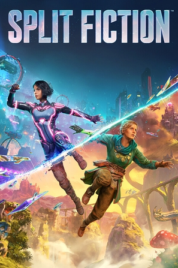
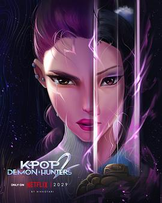
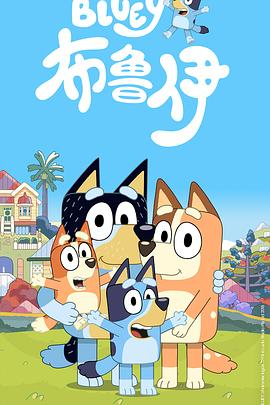
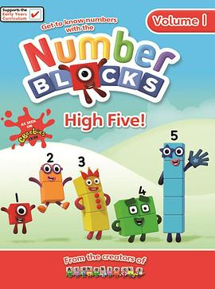

2025年12月
广播发布后不可编辑，所以每条都是那一刻的原话。
2025-12-30 19:11:51

3月份开坑，娃都出来了才终于玩完，内容很足，非常多的玩法，非常大的脑洞，这一部确实太牛了！
2025-12-29 14:02:20
2025-12-29 06:50:37
想看 重返寂静岭 / Return to Silent Hill
2025-12-29 06:50:25
想看 寂静岭2 / Silent Hill: Revelation
2025-12-29 06:47:31
2025-12-28 11:18:12
2025-12-25 16:06:25

2025-12-25 15:12:10
想看 史前星球 第一季 / Prehistoric Planet Season 1
2025-12-25 15:11:35
2025-12-25 15:11:11
2025-12-25 15:07:29
想看 窗外是蓝星
2025-12-25 15:06:00
想看 最后一席话：珍·古道尔博士 / Famous Last Words: Dr. Jane Goodall
2025-12-25 14:54:32
想看 凶降喜讯 / 굿뉴스
2025-12-25 14:53:35
想看 诡才之道 / 鬼才之道
国产恐怖片能上年度榜单？这得看一下
2025-12-25 14:44:24
想看 戏台
2025-12-25 14:43:40
 看过 惊天魔盗团3 / Now You See Me: Now You Don’t ★★★☆☆
看过 惊天魔盗团3 / Now You See Me: Now You Don’t ★★★☆☆
之前两部也是一部比一部走下坡路，最开始第一部5星，第二部就是4星了，这一部只能给到3星。电影开始就很有阿汤哥碟中谍的感觉，然后越来越像碟中谍，然后就没了，魔术的套路略老，我的口味也略叼。
2025-12-25 14:39:50

2025-12-25 14:39:37
看过 K-POP：猎魔女团 / K-Pop: Demon Hunters ★★★☆☆
《Golden》作为年度歌曲确实足够洗脑+好听，除此之外这个电影就很一般了
2025-12-21 17:44:50

2025-12-21 17:43:25

已经要开始看早教片儿了
2025-12-18 03:33:06
2025-12-09 18:09:30
看过 疯狂动物城2 / Zootopia 2 ★★★★☆
买了4D的票，才能感觉到真的是一堆过山车和喷水的剧情。总体来说还OK，肯定会有3了。这次出现了很多新动物很有趣，很不错。没想到基本上全场都是中国人。结束放credits的时候有个老外喊There’s no post credit scene然后走了，结果查了下有！所以以后看电影前一定要记得先查一下有没有片尾彩蛋。这部有的！萝卜彩蛋！ //厚礼谢，激励我只身闯澳洲的电影要出续作了，电影院买爆
2025-12-08 06:07:31
想读 生命中不能承受之轻
emmm是这本么
2025-12-08 06:06:46
想读 生命中不可承受之轻
2025-12-06 17:54:09
想看 鱿鱼游戏：真人挑战赛 第三季 / Squid Game: The Challenge Season 3
能带我上节目不
2025-12-06 17:52:42
看过 鱿鱼游戏：真人挑战赛 第二季 / Squid Game: The Challenge Season 2 ★★★☆☆
剧本感太严重了这一季，然后又是最后一集拖了好久才放出来。收尾非常平平无奇，有点失望